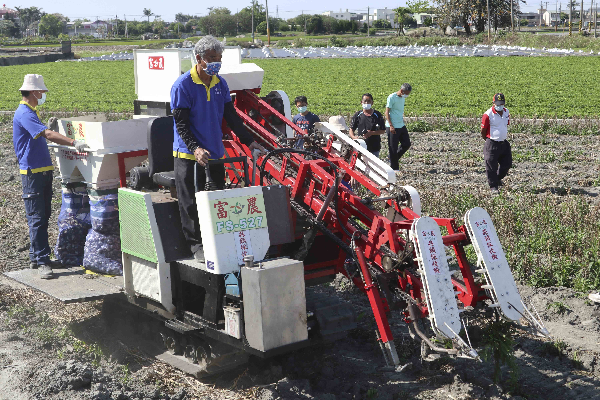
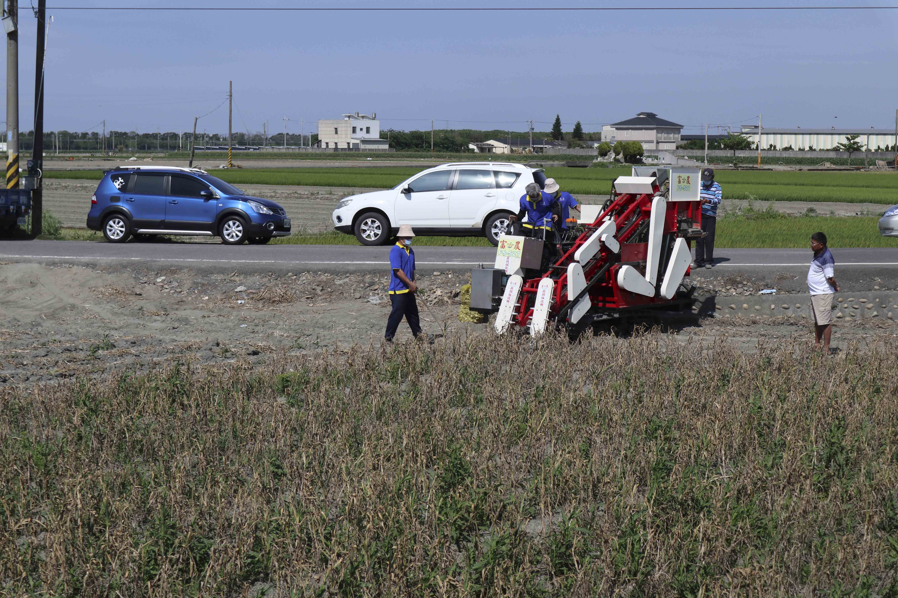

大蒜採收機（圖／農糧署）

大蒜觀摩會（圖／農糧署）
111年因疫情嚴峻外銷受阻無法暫未辦理外銷，期待疫後經濟活動能刺激外銷業務活絡。
共同運銷及行銷數量6,500公噸，穩定產地價格維持於58元/公斤以上，創造經濟效益約3.8億元；另規劃共同品牌，使用共同logo加強行銷力度，開拓多元銷售管道，提升聯盟點線面的銷售數量。
1.輔導蒜仁加工800公噸，創造經濟效益6,400萬元.
2.加強輔導聯盟成員與大蒜加工農企業媒合契作或供應業務。
1.推動機械種植面積1,500公頃，每公頃可節省人力14人/天，合計節省成本3,150萬元。
2.另持續結合農業機耕協會加速大蒜農機推廣運用，提升普及率。
3.輔導大蒜產業策略聯盟推展業務1式。
4.輔導農民團體購置大蒜產銷設備1式。
5.學習觀摩活動1場次。
6.輔導大蒜產業策略聯盟充實設備計劃(945千元)購置巧固架*450只。
7.輔導大蒜產業策略聯盟優化種蒜設備計劃(360千元)與設組合式冷藏庫*10坪。